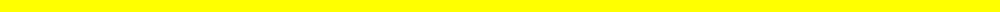

It's Christmas, well, just about Christmas. On this Christmas Eve, I thought it would be nice to give the gift of thanks to all of my subscribers on YouTube, professors on campus, and everyone else who has helped me along the way.
2018 has been a hard year for a lot of people, and I'm hoping that it's a little easier this holiday season. I hope everyone has a happy holiday!
The following images are the "festive shiny" sprites I made during yesterday's livestream, in case anyone wanted to save them for their own use. Christmas Abomasnow, Beautifly, Skitty, and Snorlax, Hannukah Golem and Eevee, Kwanzaa Magmar and Empoleon, and Chinese New Years Ekans all wish everyone happy holidays, and a happy new year!


Yesterday and today have been interesting experiences. After my Pokemon Let's Go, Eevee! stream, yesterday, one of my fans commented that they'd sadly missed the stream, and that they hoped I'd keep up the good work. I was pleased by the compliment, and assured them that I'd be back today. However, I noticed something in their new profile picture. In the background, was a swastika slightly obscured by a man in formal Nazi German soldier attire. I was shocked, to say the least. I immediately unhearted the comment, and unliked it.
This fan was Austrian, so I never thought much of his name, but I decided to look it up. I searched his username, "Hans Westmar," on Google. It was the main character in a series of Nazi German propaganda films. I was disgusted. In my ignorance, I'd allowed someone who, at the very least, portrayed himself as a Nazi, to be one of my well-liked fans.
I was upset with myself, and the fan, and decided to hide him from the channel. Now his comments and chat messages would be hidden from everyone but himself. I thought that the situation had been successfully handled, and that all was calming down, but the shock remained that whole night.
Today, I got a message in the chat from someone new. I greeted them as usual, but took note of the fact that their name was in German. Shortly after their arrival, they sent a message claiming to be a friend of the fan I'd hidden, and said that his messages weren't showing up in the chat. They asked if I'd accidentally blocked him. I panicked and pretended to know nothing about what had happened, but I knew clearly what had actually happened.
I'm here now to explain the situation, and to express clearly that positive references to Nazis or the use of Nazi propaganda and real Nazi German officials as usernames, profile pictures, or in comments will not be tolerated on my channel. My channel is to be free of such hate. I don't like to get too political on my channel, but I think the stance that Nazis suck is not political.
I also don't like to swear on my channel, but I'd like to conclude with a certain grace that only curses can have: Fuck Nazis.

When Nintendo announced ARMS, a lot of people were confused. The trailer was really weird, with spring-armed people, and wacky characters. Given more time and more footage, people were starting to get curious. Nintendo even hosted an ARMS Invitational at E3 2017, just before the game launched. Around this time, they created the Nintendo Versus Twitter account, and began working to promote ARMS as an eSport.
The hype around ARMS had climbed as it came closer to release, all thanks to the marketing Nintendo had given it through the Invitational, and the "Global Testpunch" demo they launched shortly after. When the game launched, on June 16, it was massively popular, and getting rave reviews. Many of the largest Nintendo streamers were playing, the meta began to form, and Nintendo's hope for it to become an eSport rose. The game was confirmed to be getting continual free DLC since E3, beginning with the boss of the campaign, Max Brass, in July, and many players were looking forward to the new content while they played their own copies.
During the time between the launch and the release of Max Brass, a lot of interest began to fall off. The game had little plot, not usually an issue in eSports and fighting games, more generally, but it also had little depth. This lack of depth is where the problem lied. The game's mechanics were simple, so simple that the metagame barely even formed beyond a simple idea of which characters were good, which were bad, and which ARMS were good, and which ARMS were bad. There wasn't much strategy beyond that. The lack of any control over punches other than horizontal angling lead to a famine in tactical maneuvers that could keep the community hooked.
The new characters certainly did help to boost interest each time they came, but the interest levels never reached their peak, and were never high enough to warrant a true eSports presence. This wasn't helped by the launch of Splatoon 2 that July, which took over the spotlight, far overshadowing ARMS in both interest and coverage. By EVO 2018, one of the largest fighting game eSports tournaments in the United States, ARMS had such a small following that the crowd of live spectators was as large as that of the Super Smash Bros. 4 Tournament at Tekko, a much smaller convention devoted to anime that also holds a several small eSports tournaments, in Pittsburgh that preceding April.
I always loved ARMS as a game, my review is full of praises. It was bright, fun, zany, and colorful, but it was never going to shine brighter than its competition. I don't think there's any saving ARMS as an eSport, at least with this game, but I have hope for the franchise. ARMS was pretty successful, and it's my hope that its success will be enough to warrant a sequel, a sequel that can do things right. If they add more depth, more ARMS than 3 for each fighter, and more spectacle like they've since added to Super Smash Bros. with Super Smash Bros. Ultimate, an ARMS 2 could be a genuinely competitive game. Well, as long as they don't release it a month before a bigger, also eSports ready, IP, that is.
